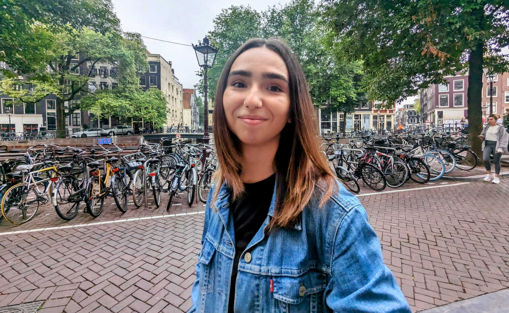

Sep 2023 –
present
present
PhD, Information Retrieval Lab, University of Amsterdam
Complex information needs in retrieval systems.
Supervisors: Evangelos Kanoulas, Maarten de Rijke

PhD student, Information Retrieval Lab · University of Amsterdam
I'm a final-year PhD student in Information Retrieval at the University of Amsterdam, working with Prof. Evangelos Kanoulas, Professor of Artificial Intelligence, and Distinguished Prof. Maarten de Rijke, Distinguished University Professor of Artificial Intelligence and Information Retrieval.
My research lies at the intersection of search and LLMs, with a focus on training deep search agents with reinforcement learning (RL), LLM post-training, and RAG systems — often using reasoning-guided RL(VF), process reward modeling (PRMs), distillation, and self-supervision. More than that, I have experience in mechanistic interpretability for model alignment, agentic tool and skills execution, code generation, and representation learning.
Complex information needs in retrieval systems.
Supervisors: Evangelos Kanoulas, Maarten de Rijke
RAG for request-guided summarization of multilingual sources at the Human Language Technology Center of Excellence (HLTCOE).
Supervisors: Kevin Duh, Kenton Murray
Thesis: Efficient data selection using semantic graph structures for pre-training.
Supervisor: Maarten de Rijke. In collaboration with Amazon Alexa
Thesis: Approximate Bayesian computation with differential evolution.
Supervisor: Jakub Tomczak
Lead Student Investment Partner
Guiding and evaluating technical feasibility of early-stage AI & deep tech startups in Europe
Applied Science Intern
Out-of-domain speech classifier for Alexa pre-training; 7% WER drop.
Supervisors: Volker Leutnant, Subhadeep Maji
Applied Science Intern
Forecasting Amazon shipments in south-west Europe for supply chain. Presented at the Amazon Machine Learning Conference (AMLC).
Supervisors: Thibault Gisselbrecht, Tim Forbes
Local Proxies, Global Failures: Does Better Local Reasoning Improve Generation, or Do Models Strategize Differently?
Under review, 2026
SubSearch: Intermediate Rewards for Unsupervised Guided Reasoning in Complex Retrieval
Under review, 2026 arXiv
Balancing Exploration-Exploitation in Query Decomposition for RAG
EACL 2026 paper
A Comprehensive Taxonomy of Negation for NLP and Neural Retrievers
EMNLP 2025 paper
Reproducing and Extending Causal Insights Into Term Frequency Computation in Neural Rankers
SIGIR-AP 2025 paper
Interpreting Multilingual and Document-Length Sensitive Relevance Computations in Neural Retrieval Models through Axiomatic Causal Interventions
SIGIR 2025 paper
Beyond Reproducibility: Advancing Zero-shot LLM Reranking Efficiency with Setwise Insertion
SIGIR 2025 paper
Self-seeding and Multi-intent Self-instructing LLMs for Generating Intent-aware Information-Seeking Dialogs
Findings of NAACL 2025 paper
A Survey on Recent Advances in Conversational Data Generation
CIKM 2024 WWW 2024 tutorial paper
Leveraging Graph Structures to Detect Hallucinations in Large Language Models
TextGraphs-17 at ACL 2024 paper
Efficient Data Selection Employing Semantic Similarity-based Graph Structures for Model Training
SODS at ICML 2023 paper Amazon Science
[Re] Replication Study of "Fairness and Bias in Online Selection"
ReScience, NeurIPS 2022 paper
* Equal contribution.
Teaching assistant for Information Retrieval courses in the MSc AI programme at the UvA since 2023. I supervise MSc student projects and theses in retrieval and RAG systems, including industry-collaborative theses with partners such as Elsevier and Vormedia. Several have become published papers at SIGIR and SIGIR-AP.
If you're a UvA student interested in search agents, interpretability or RAG, feel free to get in touch.